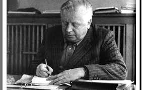

Biografija Branka Ćopića
Branko Ćopić rođen je 1. januara 1915. godine u selu Hašanima pod planinom Grmečom. U isto vreme, njegov otac Vid, kao vojnik austrougarske armije, borio se negde na frontu u Karpatima, a njegov stric Nidžo, srpski dobrovoljac, borio se u srpskoj vojsci protiv Austrougarske. Kad mu je bilo četiri godine, umro mu je otac. Ćopić je, zajedno sa mlađim bratom i sestrom, ostao da živi pored majke Soje, dede Radeta i strica Nidže. Prva pročitana knjiga bila mu je "Migel Servantes" koju je, negde u trećem razredu, kupio od učiteljice. U toj knjizi bio je opisan život slavnog španskog pisca Servantesa, skupa sa nekoliko odlomaka iz njegovog romana "Don Kihot". Sledeće pročitane knjige bile su "Doživljaji jednog vuka", pa "Doživljaji jedne kornjače". Prvo štampano delo objavio je sa četrnaest godina u omladinskom časopisu "Venac" 1928. godine. Ćopić je pohađao učiteljsku školu u Banjaluci i Sarajevu, a završio u Karlovcu, a Filozofski fakultet u Beogradu. Već kao student afirmisao se kao darovit pisac i skrenuo na sebe pažnju književne kritike; 1939. godine je dobio nagradu "Milan Rakić". Uoči Drugog svetskog rata nalazio se u đačkom bataljonu u Mariboru. U danima Aprilskog rata on je, sa grupom svojih drugova, pokušao da pruži otpor neprijatelju kod Mrkonjić Grada. Posle toga je otišao u svoj rodni kraj, a sa početkom ustanka, stupio je u redove ustanika i među njima ostao tokom cele narodnooslobodilačke borbe. Sve vreme rata bio je ratni dopisnik zajedno s nerazdvojnim prijateljem i kumom, književnikom Skenderom Kulenovićem. Posle rata neko vreme je bio urednik dečjih listova u Beogradu, a potom počeo profesionalno da se bavi književnošću. Smatra se jednim od najvećih dečjih pisaca rođenih na jugoslovenskim prostorima. Dela su mu prevođena na ruski, engleski, francuski, nemački, ukrajinski, poljski, češki, bugarski, rumunski, slovenački i mađarski jezik. Bio je član SANU i ANUSRBiH. Celi radni i životni vek nakon Drugog svetskog rata Branko Ćopić je proveo u Beogradu, ali je često putovao po Jugoslaviji i drugim evropskim državama. Za književni rad dobio je, među ostalim, Nagradu AVNOJ-a i Njegoševu nagradu (obe 1972). Nosilac je Partizanske spomenice 1941. i drugih visokih odlikovanja. Njegov stan u Beogradu, ulica kralja Milana 23, u kom je živeo do 1972. do smrti, poklonio je SANU.
Branko Ćopić (Hašani, Bosanska krajina, 1. januar 1915 — Beograd, SR Srbija, 26. mart 1984) je bio srpski i jugoslovenski književnik. Osnovnu školu završio je u rodnom mjestu, nižu gimnaziju u Bihaću, a učiteljsku školu pohađao je u Banjoj Luci, Delnicama i Sarajevu, te je završio u Karlovcu. Na Filozofskom fakultetu u Beogradu diplomirao je 1940. godine. Prvu priču objavio je 1928. godine, a prvu pripovijetku 1936. Njegova djela su, između ostalih, prevođena na engleski, njemački, francuski i ruski jezik. Bio je član Srpske akademije nauka i umetnosti i Akademije nauka i umetnosti Socijalističke Republike Bosne i Hercegovine. Izvršio je samoubistvo skokom sa mosta Bratstvo i jedinstvo u Beogradu 26. marta 1984. u svojoj 69. godini života. U Ćopićevim delima dominiraju teme iz života ljudi iz Bosanske krajine i Narodnooslobodilačkog rata.
Književni opus
Njegova prozna dela prožeta su lirikom i živopisnim realističkim slikanjem seoskog života, poznavanjem života i mentaliteta ljudi sa sela, vedrinom i živošću duha. Kreirao je mnoštvo upečatljivih i živopisnih likova i događaja nadahnutom pripovedačkom tehnikom koristeći svež, sočan i slikovit jezik pri čemu je inspiraciju nalazio u svom podgrmečkom zavičaju. Ćopića su doratnim pripovetkama najviše zanimali siromašni seljaci, sanjari i prosjaci, deca, skitnice i nadničari, i on je o svima njima pričao sa brižnim, zaštitničkim razumevanjem. U lirski intoniranim ratnim pripovetkama Ćopić je nadahnuto opisivao herojske podvige, mučeništvo i samopregor svojih junaka. Početkom 1950ih godina Ćopić je počeo da piše i satirične priče u kojima je oštro kritikovao ružne pojave u tadašnjici. Jedna od takvih priča bila je i "Jeretička priča" objavljena u "Ježu" koja je pokrenula lavinu osuda sa vrha partije i vlasti. Književni istoričar Ratko Peković napisao je knjigu "Sudanije Branku Ćopiću" u kojoj je detaljno opisana cela hajka na pisca. Sa uspehom se ogledao i u pisanju romana iako su prirodi njegovog književnog talenta više odgovarale kraće forme — pripovetke i novele. Romani "Prolom" i "Gluvi barut" slikaju učešće seljaka Bosanske Krajine u ustanku, a "Ne tuguj bronzana stražo" prilagođavanje tih istih seljaka, sada kolonista, novim uslovima života u Vojvodini. Glavnina Ćopićevog proznog opusa humoristički je intonirana, a humor nalazi u prirodi i mentalitetu njegovih junaka koji i u najtežim životnim trenucima znaju da sačuvaju vedrinu i da se nasmeju čak i vlastitoj nevolji. Sem toga, Ćopić je od onih pisaca koji su svoj posmatrački talenat naročito iskazivali kroz otkrivanje sitnih ljudskih mana i nedostataka. Iako je Ćopić bio pisac epske širine i zamaha sa urođenim pripovedačkim i humorističkim darom, u njegovim delima vidljiva je i jedna lirska žica koja se nije pokazivala samo u opisima bosanskih pejzaža već i u portretisanju ljudskih likova koji su mu bili bliski i dragi. Ta Ćopićeva poetska žica naročito je vidljiva u njegovoj ratnoj lirici, pre svega u zbirci "Ognjeno rađanje domovine". Branko Ćopić je cenjen i kao dečji pisac, prvenstveno zahvaljujući živoj mašti i daru za spretno uobličavanje svojih posmatranja ali i nesumnjivom humorističkom talentu. Napisao je preko trideset knjiga za decu, među kojima su i dva romana.
